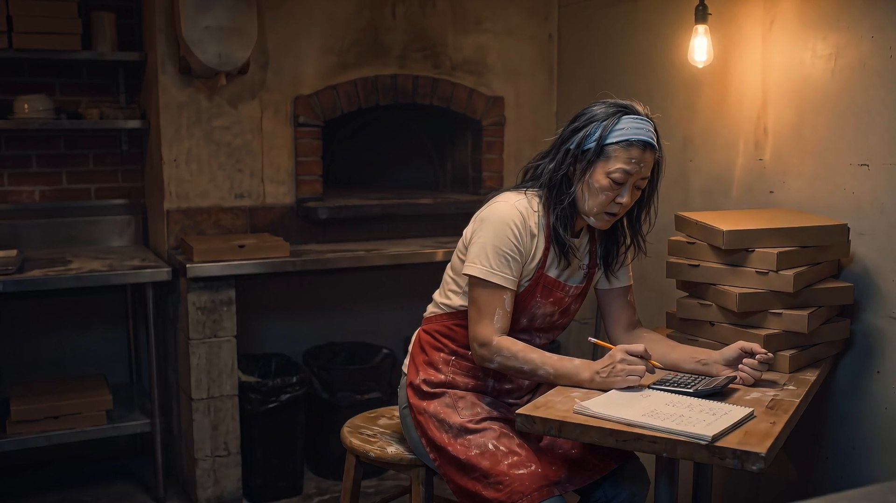

You’re not sick.
You’re invisible.
You’re good at what you do. People just haven’t seen it yet. I make short videos that change that, with sixteen years of film and television behind them.
You know you should be posting video. You don’t have the time, you don’t want to do it alone with a ring light, and the last thing you filmed is still sitting in your camera roll.
People drive past and don’t know we’re here.
A sixty second intro on your Google listing and pinned to your Instagram is the first thing a new customer sees. Right now they see nothing, or a blurry menu photo.
I know I should post more. I just don’t.
A three hour visit each month gets you four ready to post videos. You never open an editing app. You get a folder and you hit post.
I don’t want it to look cheesy.
It won’t. The best local video looks real, not slick. Real and amateur are separated by the shooting, the cut and the story, and that has been my work for sixteen years.
That is the whole problem, and it is the one a camera actually solves. Your food is good. Your prices are fair. Someone three streets over would be a regular by now if they knew you existed.
So the videos are not adverts. They are just you, doing the thing you are good at, in front of people who have not met you yet.
No script, no actors, no crew standing around. I come when it’s best for you, film what you already do, ask you a few questions, and get out of your way. You keep working the whole time.
You will be on camera talking about your business, because nobody knows it like you do. I ask, you answer the way you would for a customer. If you would rather stay off camera we can work around it, but the best version of this is you.
This is not a commercial. A commercial has a cast, a crew and a day of staged shots. That is a different job and a different quote, and I will give you one if you ask.
My first real video job was driving out to local businesses and shooting short videos for them. I showed up, put the owner on camera, walked the place for footage, and cut it into a minute or two. That was sixteen years ago. Since then I have worked in film and television, most of it in Los Angeles, on shows you have likely seen or heard of. I am back doing the first thing, with everything the second thing taught me.
The first three businesses take the founding rate, and their videos live here when they are done.
Sixteen years of film and television. The credits, the IMDb page and links to all the work are on my portfolio.
The Intro is the one video every business needs. Monthly Reels keeps you in front of people after that. Do one, do both, or start with Reels if you already have an intro. Flat prices, written down.
Isaiah Smith Films
Video for local businesses
Who you are, what you do, and why people come back.
Stay in front of people every week without thinking about it. Cancel any time.
The first three businesses get The Intro at $750, in exchange for letting me show the finished video here and a few words about how it went.
One for Instagram, one for TikTok, one for Facebook, all vertical. One horizontal folder for your website and your Google listing. Every file named so you know what it is.
Every video comes with its caption, ready to paste. Nothing to think up at eleven at night.
Open the folder, upload, done. No logins to hand over, no app to learn, nothing to edit.
Text or call is fastest. We talk for twenty minutes, I tell you what we should shoot, and if it is not a fit I will say so. No sales team, no newsletter.
You have made it this far, so I am hardly a stranger. If you would still rather not call, the form works just as well.